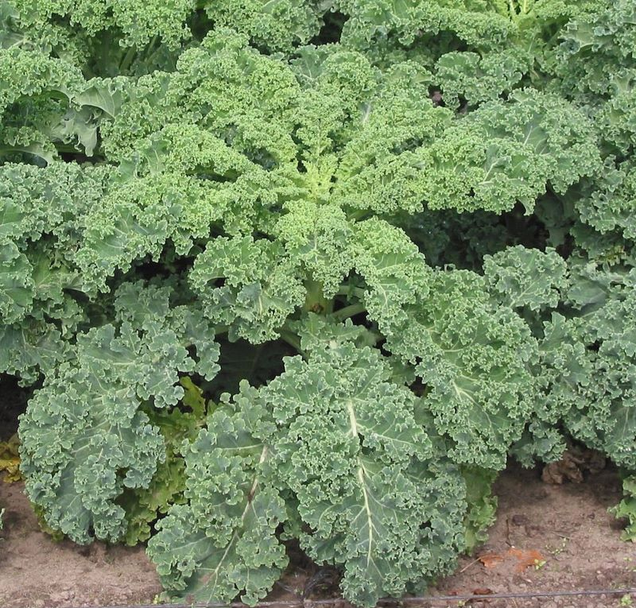

Couve frisada (kale / borecole) (Brassica oleracea L. (grupo Acephala; formas de folhas frisadas, por vezes designadas B. oleracea var. sabellica))

Couve frisada (kale / borecole).
1. Apresentação / Descrição
A couve frisada, muitas vezes comercializada como kale crespa ou borecole, é uma hortícola de folha da família Brassicaceae. Pertence à espécie Brassica oleracea L., grupo Acephala: não forma repolho compacto e desenvolve folhas verdes ou arroxeadas com bordos muito ondulados ou densamente frisados. As variedades cultivadas podem atingir cerca de 40–90 cm, conforme o cultivar e as condições. As folhas exteriores são colhidas individualmente, mantendo-se a gema central ativa.
O nome kale abrange diversas couves de folha. Esta ficha centra-se nas formas crespas ou frisadas (curly kale, borecole), distintas da couve toscana, que tem folhas longas, escuras e enrugadas, mas pouco crespas nas margens. Entre os cultivares frisados estão 'Reflex' e 'Redbor'. Os nomes históricos de algumas formas incluem Brassica oleracea var. sabellica, tratado por Kew como sinónimo taxonómico de B. oleracea.
A couve frisada resulta de uma longa seleção hortícola de couves europeias, com antepassados silvestres associados às costas atlânticas e à região mediterrânica. Cultivada para alimentação desde há séculos, é hoje comum em hortas de clima temperado e adapta-se ao cultivo biológico, em alfobre seguido de transplante ou por sementeira direta. É geralmente bienal: produz folhas no primeiro ciclo e, quando mantida para semente, pode florir no segundo ano; também existem formas perenes no conjunto alargado de kale. As folhas, tenras ou desenvolvidas, são consumidas cruas, cozidas, salteadas, assadas ou trituradas em molhos e batidos.
2. Sazonalidade (Portugal continental)
Em Portugal continental, a couve frisada é especialmente interessante para produção de outono, inverno e início da primavera, devido à sua elevada tolerância ao frio. As indicações de sementeira variam com a região, o cultivar e o objetivo (folhas jovens ou plantas adultas). Como referência de clima temperado, a RHS propõe sementeiras de primavera e início do verão para colheitas de outono a primavera; em Portugal, nas zonas de verão muito quente, o calendário deve ser ajustado para evitar stress térmico das plantas jovens.
Prefere exposição solar, embora tolere sombra ligeira, e solo firme, fértil, com boa drenagem e humidade relativamente regular. Pode iniciar-se em alfobre e transplantar-se após formação de várias folhas verdadeiras. A colheita faseada das folhas inferiores prolonga a produção, sem retirar a gema central. A rotação com outras famílias hortícolas é essencial para reduzir a acumulação de problemas típicos das brássicas.
- Sementeira: sobretudo entre março e junho como referência temperada; adaptar as datas à região portuguesa, podendo recorrer a alfobre e sementeira de fim de verão para ciclos de outono.
- Transplante: em geral após 6–8 semanas de viveiro ou quando as plantas estão suficientemente desenvolvidas; respeitar o compasso do cultivar e evitar transplantes em vagas de calor.
- Espaçamento: em plantas adultas, aproximadamente 30–60 cm entre plantas conforme o porte; para folhas baby e microvegetais podem usar-se densidades maiores.
- Colheita: folhas jovens a partir da implantação da cultura e folhas desenvolvidas sobretudo de setembro à primavera; retirar poucas folhas inferiores de cada vez.
- Condições: sol ou meia-sombra ligeira, solo fértil e drenado, regas regulares durante a instalação, proteção contra lagartas, afídeos, lesmas e aves.
- Rotação: não repetir brássicas no mesmo canteiro em anos consecutivos; prevenir a hérnia das crucíferas e outras doenças do solo.
Referência(s) para a sazonalidade e o cultivo: [S1][S2][S3][S4]
3. Como consumir
- Folhas jovens: podem comer-se cruas em saladas; retirar nervuras duras e massajar ligeiramente as folhas com azeite e limão para melhorar a textura.
- Folhas desenvolvidas: usar em sopas, caldos, guisados, salteados, pratos de massa, gratinados ou estufados; retirar os talos mais fibrosos e cozinhar até ficarem tenras.
- Preparações secas ou trituradas: assar folhas para obter chips crocantes, triturar folhas em pesto ou incorporar pequenas porções em batidos com fruta.
- Higiene e segurança: lavar cuidadosamente antes de consumir, cozinhar quando adequado e evitar oscilações bruscas na ingestão de vitamina K se estiver sob terapêutica com varfarina ou medicamentos semelhantes.
4. Receitas e preparados (Top 10)
Dez propostas culinárias documentadas para kale frisada: saladas, chips assados, pesto, sopa cremosa, acompanhamento salteado, feijão com couve, batido verde, nhoques, minestrone e polenta com legumes. Os títulos abaixo foram traduzidos para português, mas as fontes mantêm a receita original em inglês, com ingredientes, quantidades e preparação.
- Salada de couve kale – folhas cruas de couve frisada amaciadas com molho de limão e mostarda, combinadas com beterraba, cenoura e frutos secos; pode levar queijo de cabra. [R1]
- Chips de couve kale com especiarias – folhas frisadas assadas com um pouco de azeite e uma mistura aromática de especiarias, servidas crocantes como aperitivo. [R2]
- Pesto de couve kale – molho triturado de folhas de couve com pinhões, parmesão, alho, azeite e limão, adequado para envolver em massa. [R3]
- Sopa cremosa de couve kale – sopa de legumes com batata, ervilhas e folhas de couve frisada, triturada até obter textura aveludada. [R4]
- Couve kale salteada com limão – acompanhamento simples de folhas salteadas numa frigideira com azeite, terminado com sumo de limão. [R5]
- Feijão branco com kale, limão, malagueta e alho – feijão branco graúdo aquecido com alho e especiarias, misturado com couve frisada tenra e limão. [R6]
- Batido verde de couve kale – bebida triturada com folhas de kale, ananás, abacate, lima, gengibre e frutos secos, servida fresca. [R7]
- Nhoques com salsicha e couve kale – prato de um só tacho em que os nhoques cozinham com caldo e couve frisada, finalizado com salsicha e parmesão. [R8]
- Sopa minestrone com salsicha e couve kale – sopa completa de legumes, massa e salsicha, enriquecida no fim com folhas de couve frisada e limão. [R9]
- Polenta cremosa com abóbora, couve kale e avelãs – polenta macia acompanhada por abóbora assada, folhas frisadas, ervas e avelãs tostadas. [R10]
5. Benefícios para a saúde e propriedades medicinais
A couve frisada é, antes de tudo, um alimento com elevada densidade nutricional. As folhas fornecem fibra alimentar, vitaminas K e C, precursores vegetais de vitamina A, cálcio e vários carotenoides. Inserida numa alimentação variada, pode contribuir para satisfazer necessidades diárias de micronutrientes; os seus efeitos não devem ser confundidos com os de um medicamento.
A vitamina K participa na coagulação normal e no metabolismo ósseo; a vitamina C contribui para funções fisiológicas como a síntese normal de colagénio; a fibra alimentar integra uma dieta favorável à função intestinal. A couve kale também fornece luteína e zeaxantina e contém glucosinolatos, que podem originar isotiocianatos durante a preparação e digestão dos vegetais.
Estudos laboratoriais investigam possíveis ações biológicas de compostos de brássicas, mas a evidência clínica não demonstra que o consumo isolado de kale previna ou trate cancro ou outras doenças. A composição varia entre cultivares, locais de cultivo, maturação e formas de confeção. O benefício mais seguro e documentado é o contributo nutricional num padrão alimentar equilibrado.
- Densidade nutricional elevada: fornece quantidades relevantes de vitamina K, vitamina C, provitamina A e minerais, com baixo valor energético por 100 g. [M1][M3][N1]
- Contributo para a coagulação normal e metabolismo ósseo: associado ao fornecimento de vitamina K, sem substituir cuidados médicos. [M1][M3]
- Apoio à diversidade de fibras alimentares: integra uma alimentação vegetal variada e pode favorecer a regularidade alimentar e intestinal. [M1][N1]
- Carotenoides alimentares: fornece betacaroteno, luteína e zeaxantina, compostos naturais presentes nas folhas verdes. [M1][N1][M4]
- Glucosinolatos e derivados: apresenta compostos sulfurados sob investigação laboratorial; não há base suficiente para alegar tratamento ou prevenção de cancro pela planta isolada. [M1][M2][M4]
- Versatilidade numa alimentação equilibrada: pode substituir acompanhamentos pobres em vegetais e aumentar o consumo de hortícolas ao longo do ano. [M1][N1]
A couve frisada é um alimento e não deve ser apresentada como cura de doenças ou alternativa a terapêuticas prescritas. Os possíveis efeitos protetores de compostos de brássicas em doenças crónicas continuam a ser investigados e não autorizam promessas clínicas específicas.
Devido ao teor elevado de vitamina K, quem utiliza varfarina ou outros antagonistas da vitamina K deve manter um consumo relativamente constante de couves e outros vegetais folhosos, acordado com a equipa de saúde; não é necessário eliminá-los automaticamente da alimentação.
Tal como outras brássicas, contém substâncias goitrogénicas em quantidades variáveis. O consumo habitual, em doses alimentares e com ingestão adequada de iodo, é geralmente compatível com uma dieta normal; pessoas com doença tiroideia ou restrições médicas específicas devem pedir orientação individual. Lavar as folhas e adaptar a quantidade à tolerância digestiva.
6. Propriedades nutricionais
Valores orientadores por 100 g de parte comestível de couve kale, sem molhos nem gordura adicionada. A coluna «crua» corresponde a um registo USDA apresentado em WhatYouEat; a coluna «cozida» a kale cozida em água e escorrida, num registo USDA histórico reproduzido em Foodstruct. Não se trata necessariamente de medições pareadas da mesma variedade ou lote.
Como as tabelas usam amostras, épocas e metodologias diferentes, diferenças como a vitamina K por 100 g não devem ser interpretadas diretamente como ganho ou perda provocado pela cozedura. O valor real depende do cultivar, das partes utilizadas e da confeção. O conteúdo de vitamina C pode diminuir com tratamentos térmicos e perdas para a água.
| Componente | Couve kale crua (100 g) | Couve kale cozida e escorrida (100 g) |
|---|---|---|
| Energia | 35 kcal | 28 kcal |
| Hidratos de carbono (totais) | 4,42 g | 5,63 g |
| Fibra alimentar | 4,1 g | 2,0 g |
| Proteína | 2,92 g | 1,90 g |
| Lípidos totais | 1,49 g | 0,40 g |
| Vitamina C | 93,4 mg | 41 mg |
| Vitamina K (filoquinona) | 390 µg | 817 µg |
| Vitamina A (RAE) | 241 µg | 681 µg |
| Cálcio | 254 mg | 72 mg |
| Potássio | 348 mg | 228 mg |
7. Utilidades e aplicações
- Alimentação humana: folhas utilizadas em saladas, sopas, guisados, salteados, pestos, chips e batidos, com adaptações culinárias a vários hábitos alimentares. [U1][U4]
- Produção de folhas ao longo de meses: colheita gradual das folhas inferiores sem destruir a planta, especialmente útil no outono e inverno. [U1]
- Microvegetais e folhas baby: plantas jovens produzidas em pequenos tabuleiros ou vasos, para saladas e guarnições. [U1]
- Planta ornamental comestível: cultivares de folhas muito crespas ou arroxeadas dão cor e textura a canteiros e bordaduras. [U1][U2]
- Forragem: algumas variedades de kale ou couves de folha também são cultivadas para alimentação animal, exigindo manejo adequado. [U2][U3]
- Compostagem e rotação: os restos vegetais saudáveis podem integrar compostagem; a cultura deve alternar com famílias não brássicas para reduzir doenças do solo. [U1][P2]
8. Grau de funcionalidade em permacultura
Classificação indicativa segundo o algoritmo de funcionalidade em permacultura definido para o projeto.
- Grau de funcionalidade
6,4 / 10
- Funções principais
Na horta de permacultura, a couve frisada fornece folhas muito nutritivas durante a estação fresca e admite colheitas sucessivas, facilitando uma produção escalonada sem arrancar imediatamente toda a planta. Pode integrar canteiros alimentares, bordaduras e espaços com cultivo biológico, contribuindo também para a diversidade de formas e cores.
Além do consumo humano, o conjunto dos cultivares de kale inclui usos ornamentais e forrageiros. Quando se deixa a cultura completar o ciclo, a floração pode disponibilizar recursos a insetos, embora a maioria das plantas destinadas à produção de folhas seja colhida antes dessa fase. Exige solo fértil, espaço suficiente e rotação cuidada, pelo que o seu contributo para a melhoria do solo e a autonomia do sistema é moderado.
- Notas
Critérios positivos (0–2 pontos cada): ALIM = +2 (folhas comestíveis, nutritivas e colhidas repetidamente); MED = +1 (contributo nutricional para a saúde, sem uso terapêutico clínico estabelecido); ESTR = +1 (folhagem volumosa útil na composição de bordaduras, sem função estrutural permanente); SOLO = +1 (cobertura temporária e biomassa residual, mas sem fixação de azoto); ECO = +1 (floração eventual útil a insetos, limitada pelo maneio para colheita); RUST = +2 (boa rusticidade ao frio e produção no inverno); MULT = +2 (alimento, microvegetais, ornamentação e potencial forrageiro). SOMA POSITIVOS = +10.
Penalizações (0, −1 ou −2): TOX = 0 (alimento comum, apesar de precauções para terapêutica com antagonistas da vitamina K); PERIGO = 0 (sem perigo físico relevante); INVAS = 0 (cultivar não considerado invasor); COMP = −1 (exigência de fertilidade, água e espaço e necessidade de rotação). SOMA PENALIZAÇÕES = −1.
Algoritmo do projeto: BRUTA = POS + NEG = 10 − 1 = 9; grau = (BRUTA / 14) × 10 = (9 / 14) × 10 = 6,428…; arredondado a uma casa decimal = 6,4 / 10. Pontuação interpretativa relativa a um sistema de permacultura, não índice científico oficial.
9. Referências
Descrição e botânica
- [D1] Royal Horticultural Society (RHS), Brassica oleracea Acephala Group. Identificação e morfologia do grupo hortícola, incluindo borecole e folhas onduladas ou frisadas. Disponível em: https://www.rhs.org.uk/plants/106079/brassica-oleracea-acephala-group/details
- [D2] Royal Botanic Gardens, Kew, Brassica oleracea L., Plants of the World Online. Espécie aceite, origem silvestre e grupos cultivados, incluindo kale e borecole. Disponível em: https://powo.science.kew.org/taxon/urn:lsid:ipni.org:names:279435-1/general-information
- [D3] RHS, How to Grow Kale. Diferenças entre couves frisadas e toscanas, ciclo de vida, tipos de folhas e cultivo. Disponível em: https://www.rhs.org.uk/vegetables/kale/grow-your-own
- [D4] Harvard T. H. Chan School of Public Health, Kale. História hortícola, variedades de kale e diversidade de formas. Disponível em: https://nutritionsource.hsph.harvard.edu/food-features/kale/
Sazonalidade e cultivo (Portugal e clima mediterrânico)
- [S1] RHS, How to Grow Kale. Sementeira, transplante, compassos, colheita escalonada e cuidados com pragas em climas temperados. Disponível em: https://www.rhs.org.uk/vegetables/kale/grow-your-own
- [S2] GROWIT Portugal, Bio Couve frisada (Kale). Variedade de folhas muito frisadas, tolerância ao frio, alfobre, transplante e rotação. Disponível em: https://growit.pt/produto/pt-bio-03-couve-frisada/
- [S3] RHS, Fascinating facts: kale. Origens culturais, sementeira entre março e junho e época de colheita em clima temperado. Disponível em: https://www.rhs.org.uk/advice/grow-your-own/features/fascinating-facts-kale
- [S4] RHS, Crop rotation. Rotação de brássicas para reduzir a acumulação de doenças do solo. Disponível em: https://www.rhs.org.uk/vegetables/crop-rotation
Consumo, cuidados e segurança
- [C1] RHS, How to Grow Kale. Consumo das folhas jovens e maduras, microvegetais e colheita continuada. Disponível em: https://www.rhs.org.uk/vegetables/kale/grow-your-own
- [C2] Harvard T. H. Chan School of Public Health, Kale. Usos culinários e precauções relativas à vitamina K e à tiroide. Disponível em: https://nutritionsource.hsph.harvard.edu/food-features/kale/
- [C3] BBC Good Food, Kale recipes. Conjunto de receitas culinárias com diferentes formas de preparar couve kale. Disponível em: https://www.bbcgoodfood.com/recipes/collection/kale-recipes
- [C4] NIH Office of Dietary Supplements, Vitamin K: Fact Sheet for Health Professionals. Função da vitamina K e necessidade de consumo alimentar consistente com antagonistas da vitamina K. Disponível em: https://ods.od.nih.gov/factsheets/VitaminK-HealthProfessional/
Receitas e preparados
- [R1] BBC Good Food — Kale salad. Salada de couve kale com beterraba, cenoura, frutos secos, queijo opcional e molho de limão e mostarda. Disponível em: https://www.bbcgoodfood.com/recipes/kale-salad
- [R2] BBC Good Food — Spiced kale crisps. Folhas de couve kale assadas com azeite e ras el hanout. Disponível em: https://www.bbcgoodfood.com/recipes/spiced-kale-crisps
- [R3] BBC Good Food — Kale pesto. Pesto de couve kale com pinhões, parmesão, alho, azeite e limão. Disponível em: https://www.bbcgoodfood.com/recipes/kale-pesto
- [R4] BBC Good Food — Easy kale soup. Sopa cremosa de kale, ervilhas, batatas, cebola e caldo vegetal. Disponível em: https://www.bbcgoodfood.com/recipes/easy-kale-soup
- [R5] BBC Good Food — Pan-roasted kale with lemon. Couve kale salteada na frigideira com azeite e limão. Disponível em: https://www.bbcgoodfood.com/recipes/pan-roasted-kale-with-lemon
- [R6] BBC Good Food — Butter beans with kale, lemon, chilli & garlic. Feijão branco graúdo com kale, limão, alho e malagueta. Disponível em: https://www.bbcgoodfood.com/recipes/butter-beans-with-kale-lemon-chilli-garlic
- [R7] BBC Good Food — Kale smoothie. Batido com couve kale, abacate, ananás, lima, gengibre e caju. Disponível em: https://www.bbcgoodfood.com/recipes/kale-smoothie
- [R8] BBC Good Food — Sausage, kale & gnocchi one-pot. Nhoques num só tacho com couve kale, salsicha, caldo e parmesão. Disponível em: https://www.bbcgoodfood.com/recipes/sausage-kale-gnocchi-one-pot
- [R9] BBC Good Food — Sausage & kale minestrone. Sopa minestrone com couve kale frisada, legumes, massa e salsicha. Disponível em: https://www.bbcgoodfood.com/recipes/sausage-kale-minestrone
- [R10] BBC Good Food — Soft polenta with roast squash, kale & hazelnuts. Polenta cremosa acompanhada por abóbora, kale e avelãs assadas. Disponível em: https://www.bbcgoodfood.com/recipes/soft-polenta-roast-squash-kale-hazelnuts
Estudos científicos e revisões (benefícios e propriedades medicinais)
- [M1] Harvard T. H. Chan School of Public Health, Kale. Perfil nutricional e interpretação prudente dos estudos sobre glucosinolatos e saúde. Disponível em: https://nutritionsource.hsph.harvard.edu/food-features/kale/
- [M2] National Cancer Institute, Cruciferous Vegetables and Cancer Prevention. Glucosinolatos, carotenoides e limites das conclusões sobre prevenção de cancro. Disponível em: https://www.cancer.gov/about-cancer/causes-prevention/risk/diet/cruciferous-vegetables-fact-sheet
- [M3] NIH Office of Dietary Supplements, Vitamin K. Papel da vitamina K na coagulação e no metabolismo ósseo. Disponível em: https://ods.od.nih.gov/factsheets/VitaminK-HealthProfessional/
- [M4] Ferioli F. et al., Comparison of leafy kale populations from Italy, Portugal, and Turkey (2013). Estudo de fenólicos, glucosinolatos, carotenoides e sua variabilidade em populações de kale. Disponível em: https://pubmed.ncbi.nlm.nih.gov/23749678/
Dados nutricionais
- [N1] USDA FoodData Central, Kale, raw (reprodução em WhatYouEat). Valores por 100 g de kale crua: registo de 35 kcal, macronutrientes, vitaminas e minerais. Disponível em: https://whatyoueat.io/foods/168421-kale
- [N2] USDA, Kale, cooked, boiled, drained, without salt (reprodução em Foodstruct). Valores por 100 g de kale cozida e escorrida; registo USDA com 28 kcal e vitaminas. Disponível em: https://foodstruct.com/food/kale
- [N3] Harvard T. H. Chan School of Public Health, Kale. Vitamina K, C, A, luteína, zeaxantina e outros nutrientes relevantes. Disponível em: https://nutritionsource.hsph.harvard.edu/food-features/kale/
Utilidades e aplicações
- [U1] RHS, How to Grow Kale. Produção de microvegetais, folhas comestíveis e variedades ornamentais. Disponível em: https://www.rhs.org.uk/vegetables/kale/grow-your-own
- [U2] Kew, Brassica oleracea L.. Utilização de variedades de couve para alimentação humana, forragem e ornamentação. Disponível em: https://powo.science.kew.org/taxon/urn:lsid:ipni.org:names:279435-1/general-information
- [U3] GROWIT Portugal, Bio Couve frisada (Kale). Utilização alimentar e forrageira de kale frisada. Disponível em: https://growit.pt/produto/pt-bio-03-couve-frisada/
- [U4] BBC Good Food, Kale recipes. Versatilidade culinária em saladas, sopas, pestos, salteados e pratos de forno. Disponível em: https://www.bbcgoodfood.com/recipes/collection/kale-recipes
Permacultura
- [P1] RHS, How to Grow Kale. Colheitas sucessivas, robustez ao frio, cultivo e riscos de competição/pragas. Disponível em: https://www.rhs.org.uk/vegetables/kale/grow-your-own
- [P2] RHS, Crop rotation. Importância das rotações para evitar doenças de brássicas na horta. Disponível em: https://www.rhs.org.uk/vegetables/crop-rotation
- [P3] Kew, Brassica oleracea L.. Aplicações alimentares, forrageiras e ornamentais dos cultivares de couve. Disponível em: https://powo.science.kew.org/taxon/urn:lsid:ipni.org:names:279435-1/general-information
- [P4] RHS, Brassica oleracea Acephala Group. Porte, floração e risco de pragas em kale e borecole. Disponível em: https://www.rhs.org.uk/plants/106079/brassica-oleracea-acephala-group/details
- [P5] GROWIT Portugal, Bio Couve frisada (Kale). Sementes biológicas, caráter forrageiro, adaptação a zonas frias e rotação. Disponível em: https://growit.pt/produto/pt-bio-03-couve-frisada/